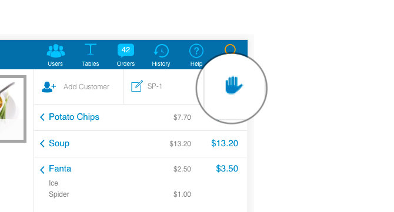
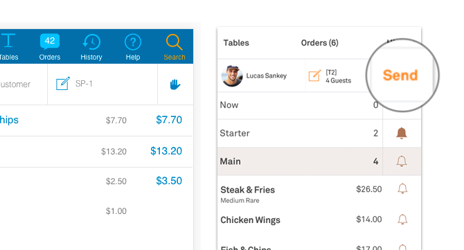
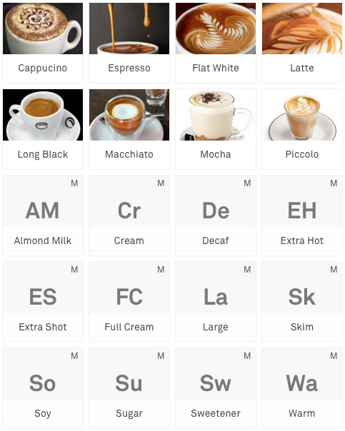

This case study was chosen because I lead the design and front end coding.
The Brief
Kounta at the time was a 5 year old company that had found product market fit of providing a cloud based point of sale solution to restaurants and cafes around the world. To help shape the vision of the next step of the journey, the company went through a branding exercise to understand who they are and who their customer is - this meant a rebrand.
A big part of realising this vision would be through the product execution as is what customers will see in the end. This work would be the foundation for new experiences on Kounta.
The Process
When the product owner and I joined the project of 3 engineers, there were some initial directions on the design but final designs decisions were needed. The deadline to release the updated product was also in 2 months time.
We quickly did an audit of the work to be done. We did this by going through the flows of the application and took screenshots along the way.
Then we assessed the current plans which included a rewrite of the application and navigation changes. Based on engineering feedback and the scope of work we had to scope out our team felt like this was not enough time to get the new navigation user validated, code changed, and everything regression tested in time.
Reducing the scope of change
We knew we wouldn't get this done in time and inform users responsibly. There was a big risk in the designs that they haven't been validated with users and the turnaround time to do usability tests as well as design the components necessary to test would push us away.
We had a discussion with senior management and we were able to get an extra month but more importantly we were able to cut some of the scope back for the initial release. We focused only on implementing the part of the navigation change and styling changes for the rebrand. This meant that we made could get things tested properly.
Visual foundation
For the foundation of the redesign I focused on the following: typographic scale, spacing, and colour. The rebranding included change in fonts and that meant working out the typographic scale for the application.
Typography
For spacing, I decided to go with a 8px grid so that our design would scale well across the different devices that we support and the spacing calculation is easy to calculate.
The colour for the application were updated as part of the rebrand but I needed to find out combinations that worked visually for accessibility and as well as from a brand standpoint.
Rules and the search for tertiary app colours
Once the foundations were in place, the next step was to test them in action by applying them to a few sample pages to see if the concepts hold up with real data.
With a few tweaks, we had a foundation to start applying the changes across the product.
Checking for constrast in daylight
Key changes
One of the actions that confused most internal employees first time using the product was what this icon ✋ meant
What does the hand mean?
This action of the hand was to put the order on hold and send the order to the kitchen. This is useful for table service restaurants when they want to send the order to be made prior to having the customer pay for the meal. In explaining this functionality to each other a few times, we said why don't we just change it to "Send". We went out to some of our nearby customers as a form of guerilla testing and got positive reactions to the change. This signal along with upcoming communications about the change we were confident to go ahead with the change.
From 🤚 to "Send"
When we did site visits and usage analysis, we released that people didn't put up a lot of product images in the point of sale. When asked, many customers did not have the time to take and upload photos. We decided to make it a better experience to improve this state by using product initials instead of a default image. In doing so, we hoped for customers to have a better experience while scanning for information.
Product tiles
Should designers code?
We got our one month extension but the extension came at the time of Christmas and many people were on holiday. This meant that after the holidays, there would be a mountain of work for the team to tackle in a rush to get it ready for testing prior to launch. I mediated the situation because I had some experience in doing HTML/CSS and asked the CTO and engineers if I could help contribute to the front end changes. They gave me access to commit to the code base and good to see that I didn't break everything.
Contribution to the codebase
The Outcome
We were able to finish the work and release it to our customers only 2 weeks later than we initially targeted.
For our key changes, we had more people using the feature of "Send" because they understand what it is and for those who didn't use it we have had request to remove it. This is good info for us because our team had a hypothesis that not everyone uses the "Send" features and therefore we could simplify the UI to have a basic mode. The product tiles were of a mix success, some customers loved it and other loathed it because they had long product names which were now truncated. To fix the situation, for existing customers we had this feature turned off by default and for new customers this feature is turned on. The rationale here was that we wanted to change customers behaviour of simplifying product display on the point of sale based on similar contexts of other successful customers using our product.
We laid the foundation so now we are able to tackle the things we could not get to do earlier. Some elements of the navigation are being implemented in other areas of the product to get real life feedback on a small scale before rolling it out to the core experience. We are improving our product metrics and have adopted Google's HEART framework to measure success of new features that we roll out. I started leading and coding our components into a design system that is written in React.
All of this work could not have been done without the help of our engineers, support staff testing and documenting the changes, QA engineers ensuring we maintained quality, product owners who know the product inside and out, and senior management for their support and understanding.